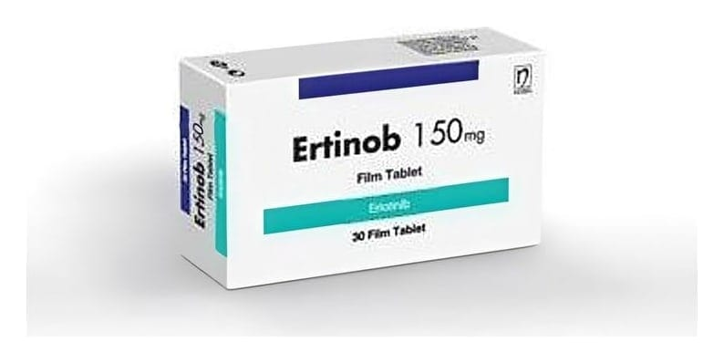

Ertinob 25 mg Film Tablet, 30 Adet

Ne için kullanılır
KT · Bölüm 1• Bir film kaplı tablet 25 mg erlotinibe eşdeğer miktarda 27,32 mg erlotinib hidroklorür içerir. Beyaz-beyazımsı renkli, yuvarlak, bombeli film kaplı tabletler halindedir. 30 tablet içeren ambalajlarda, 10’ar tabletlik blisterler halinde bulunur. • Antineoplastik ilaçlar adı verilen, tümör hücresinin bölünmesini ve gelişmesini engelleyen ilaç grubunun bir üyesidir. • Erlotinib içeren ERTİNOB epidermal büyüme faktör reseptörü (EGFR) olarak adlandırılan proteinin aktivitesini engelleyerek kanseri tedavi etmek amacı ile kullanılan bir ilaçtır. Bu proteinin kanser hücrelerinin büyümesinde ve yayılmasında rol oynadığı bilinmektedir. • ERTİNOB, yetişkinlerin kullanımı içindir ve eğer kanser hücrenizde spesifik bir EGFR mutasyonunuz (bir tür genetik bozukluk) varsa ve metastatik evrede bulunan yassı hücreli olmayan, küçük hücreli olmayan akciğer kanseri hastası iseniz, ERTİNOB tedavinizin ilk ya da
ikinci basamağı için size reçetelenebilir.